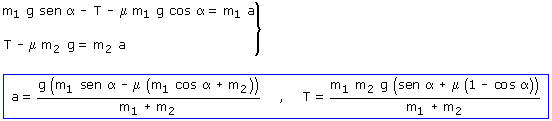

| Si el problema no da los datos de la polea se sobreentiende que su masa es despreciable. En este caso no se cuenta con la rotación de la polea y solo se estudia la traslación de los bloques La polea girará en sentido contrario al de las agujas del reloj El bloque 1 bajará y el bloque 2 irá hacia la izquierda, ambos con la misma aceleración (Módulo)
Combinando las ecuaciones obtenidas resulta un sistema de incógnitas: T, a  Si la aceleración fuera negativa significaría que el rozamiento de los bloques impide el movimiento |